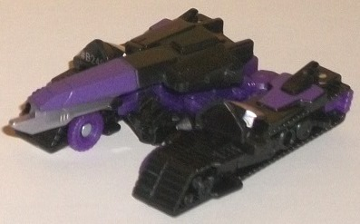
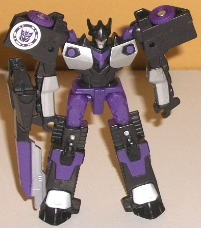
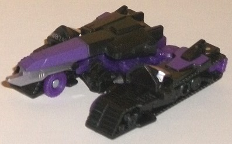
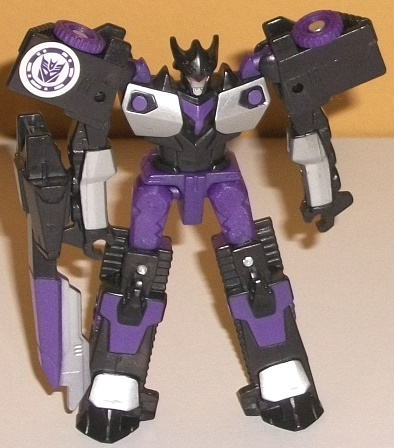
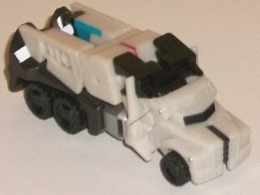
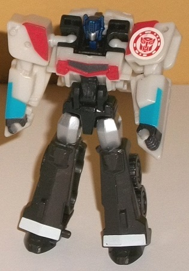

 
Size
: Legion 2-pack
Price
: $12 (U.S.)
Overall Rating
: 7.4
 Megatronus
Megatronus


Allegiance
: Decepticon
Difficulty of Transformation
: Easy
Color Scheme
: Charcoal black, purple,
and some silver and red
Individual Rating
: 7.0
Megatronus' alt mode
is in keeping with his other RID2015 toys, and is an "H-tank", for lack
of a better word-- it's got the treads and turret of a tank, but lacks
most of the body-- specifically the middle sections of the front and back.
Although, to be honest, for this particular toy of him, he's more of a
"C-tank"-- the back middle section of the tank is technically there, but
it's very obviously just his robot waist and upper legs splayed out, which
is an obvious extra and a slight eyesore (though certainly not as much
of one as it would be if the toy were of a larger size class). The back
side of the head is also slightly obvious below the turret, though that's
a relatively minor extra; same with the feet on the top of the treads,
it's just more forgiveable at this small of a size. Megatronus' general
proportions in this mode are otherwise pretty decent, and I love the large
bayonet under the tank cannon-- helps make this mode a bit more individualistic.
Tha tank can rotate at the center point back-and-forth a bit, though the
feet sticking up from the treads prevent it from doing a complete 360 spin.
The mold detailing on most of the parts is a bit above-average for a RID
toy, with the treads and their wheels surprisingly intricately detailed,
especially on such a small figure. The turret is somewhat sparsely detailed,
but there's still the necessary detail on there to keep it more-or-less
in line with the larger versions of this design. For the color scheme,
Megatronus sticks to a pretty dark scheme, being mostly charcoal black
and purple. As with most instances of charcoal black, I feel a more "pure"
black would've worked better, but the charcoal black still looks decent.
The black and purple go together fairly well, though I wish the purple
was just a tad lighter for better contrast-- there really aren't any relatively
"light" paint apps in this mode beyond the silver on the pieces that become
the robot ankles and the bayonet.
To transform Megatronus
to robot mode, it's slightly more complex than your average Legion toy,
but that's not saying much. The arms slide out of the side of the tread
sections in a rather ingenious move, while the front tank sections become
the shoulders. Then you rotate the sides down and rotate the waist around
to form the lower robot body while taking off the turret piece and slapping
it into a peg hole on the side of one of his lower arms to become his cannon
weapon. Figuring out how to get those little arm pieces out of the sides
of the treads may take a little finagling at first, but it's easy enough
once you figure it out. The end result is pretty darned good, particularly
for a Legion-class toy; the only vehicle mode "extra" is the turret on
his arm, which is admittedly a bit bulkier near the back than a gun/cannon
should be. Otherwise the proportions--at least from the front-- are pretty
solid, with a fairly wide chest and shoulders, bulky legs, and slightly
skinny but still decent arms. From a side view, because of the transformation
and tank proportions, however, he is a bit 2-D and should have been a bit
"thicker". The detailing on the chest is pretty good, with angular ab details,
wide pecs, and little purple areas between the pecs and near the top of
each one. The headsculpt is also solid, with a pretty accurate tri-horned
helmet and a face painted silver with red eyes. The paint detailing really
helps break up the black much better here, with the aforementioned silver
and purple details on the chest, as well as silver on the lower arms and
above the feet, and some purple paint on the lower legs. The purple plastic
on the upper legs and waist also helps with the color breakup, too. For
articulation, Megatronus can move at the shoulders (at two points), rotation
at the waist, and movement at the hips. Particularly waist rotation is
exceedingly rare for Legion-class toys, so for this size he's fairly poseable.
 Optimus
Prime (Clash; Legion)
Optimus
Prime (Clash; Legion)


Allegiance
: Autobot
Difficulty of Transformation
: Very
Easy
Color Scheme
: Charcoal black, off-white,
and some silver, white, black, red, dark metallic blue, and some moderately
light electric blue
Individual Rating
: 7.7
(NOTE: Because this is a repaint, this is not a full-blown review. This mainly covers any changes made to the mold and the color scheme, and merely compares it to the original RID2015 legion Optimus Prime toy. For a review on the mold itself, read the review of the original RID2015 legion Optimus Prime here .)
The legion class version
of the "Clash" upgrade for Optimus Prime is the least accurate out of all
the various versions of this upgrade, as the colors are definitely far
off from his primarily darker red-and-black color scheme in the Season
1 finale. The charcoal black is still here, and is used for his legs mostly
and a bit on his hands, with some "normal" black on his wheels and some
minor connector pieces. Like with most instances of charcoal black, I felt
a more "pure" black would've worked better in its place-- especially since
there's normal black on other places on the figure-- but it's not outright
bad. Both of them contrast pretty well with the off-white plastic, which
is primarily used for the cab section and the top section of the vehicle
& robot modes. Obviously black and white go decently well together,
but in vehicle mode there aren't any other colors easily visible, so everything
looks pretty monochrome and a bit boring. However, in robot mode thankfully
there's some much-needed color, with some light blue on the lower arms
and some red on the shoulders and on the chest. This is really the only
hint of Optimus Prime's "normal" colors on this toy, along with the dark
metallic blue used for his head. These colors really pop against the off-white
and black, and really should've been used more on the toy. There's also
some black paint on the truck front window and the faux window on the chest,
white paint on the ankles, and silver on the upper legs and faceplate.
It's nice to have at least that much variation, and things look nice enough
in robot mode, but again in vehicle mode there just NEEDS to be some more
color, particularly on the truck cab portion.
No mold changes have
been made to Optimus Prime.
The "Clash" Megatronus
vs. Optimus set is definitely the one to get out of the two Toys "R" Us
Exclusive Legion 2-packs, as not only is this the only way you can get
Legion Megatronus-- who is, at the very least, an above-average Legion
figure-- but Optimus is a pretty nice Legion-class mold as well and has
a unique color scheme (even though I wish he had a bit more paint). An
easy recommendation if you love little figures like these.
Reviews by Beastbot